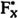

by Abraham Kandel
CRC Press, CRC Press LLC
ISBN: 084934297x Pub Date: 11/01/91
|
|
Fuzzy Expert Systems
by Abraham Kandel CRC Press, CRC Press LLC ISBN: 084934297x Pub Date: 11/01/91 |
| Previous | Table of Contents | Next |
The effort function gk[Rk, qk(Rk)] represents the effort associated with responding to query qk at a particular state Rk. There will generally exist queries that are more difficult to understand, and hence respond to, than others. There will also be some queries that lead to a final state faster than others. The effort function should reflect this. The system equation f(Rk,qk) is obtained from the decision model for interactive aiding developed in Reference 19, and just reviewed. It computes the next state (order) of the system Rk + 1 = f(Rk,qk) given the current state (order) and the response to query qk. The objective is to minimize the total effort of the inquiring process through identification of the optimal inquiry pattern, or minimal set of information, required to provide a recommendation.
Before proceeding with some commentary concerning development of the dynamic programming algorithm for the inquiring system, it is important to clarify the underlying sequence of events envisioned in the decision support process. These are
After this process is completed, a sequence of queries {q0,q1,…,qN - 1} is obtained. We call this sequence an inquiry pattern, and it specifies the queries to be presented at each stage for every possible order that may occur. In other words, it tells which query to select after the decision maker responds to the currently unresolved query.
It is important to note that although this process evolves much like a deterministic dynamic programming problem, i.e., the order of the alternatives is fully determined by knowing the order and the response to the query at each stage, there is an element of uncertainty in that the response to the query is not known a priori. Thus, the possible orders of the alternatives at each stage is a stochastic variable determined by the order at the previous stage and the probability distribution of the possible responses to each query at that stage. The decision model equation then becomes Rk + 1 = f[Rk,wk(qk(Rk))]. This is a stochastic control problem. Hence, it is more difficult to solve than a simple deterministic problem. We also face the problem of identifying a probability measure for the set of responses to each query at each stage. Thus, implementation of the inquiring system is not necessarily a trivial task without the ability to rapidly solve the posed computations.
The inquiry space is determined by the set of all possible simple preference comparisons among elements on the set of alternatives Fx and also strength of preference judgments in . A set of m feasible alternatives to be evaluated in terms of n attributes results in a set of alternatives Fx with cardinality mn. The inquiry space is then a set containing mn(mn - 1) ~ 2 possible queries regarding the relation of preference among pairs of alternatives in Fx, and the number of strength of preference queries depends on previous preference judgments in Fx. For notational purposes, let [i,j] denote a query requesting the preference relation among alternatives Ai and Aj in Fx, and assuming (i,j) and (k,l) are in , denote [(i,j),(k,l)] a query requesting the strength of preference relation among previous simple preference judgments.
The response space constitutes the element of uncertainty in the inquiring system. When the decision maker is presented with query [i,j], the possible responses could be that alternative Ai is as good or preferred to Aj, Aj is as good or preferred to Ai, there is indifference between the two, or the decision maker might even refuse to respond to that query. The response space can be described by the set of relations {(i,j),(j,i)}, with (i,j) meaning that Ai·Aj. That is, not (i,j) and not (j,i) is equivalent to not responding to that query, (i,j) and not (j,i) that Ai is as good or preferred to Aj, and (i,j) and j,i) that the decision maker is indifferent between the two alternatives. Likewise, the response for query [(i,j),(k,l)] is described by the set of relations {((i,j),(k,l)),((k,l),(i,j))} with a similar interpretation. A probability measure defined on the set of responses for each query at each state could represent the uncertainty associated with the response. This probability measure may depend explicitly on the present order of the alternatives and the query presented.
| Previous | Table of Contents | Next |